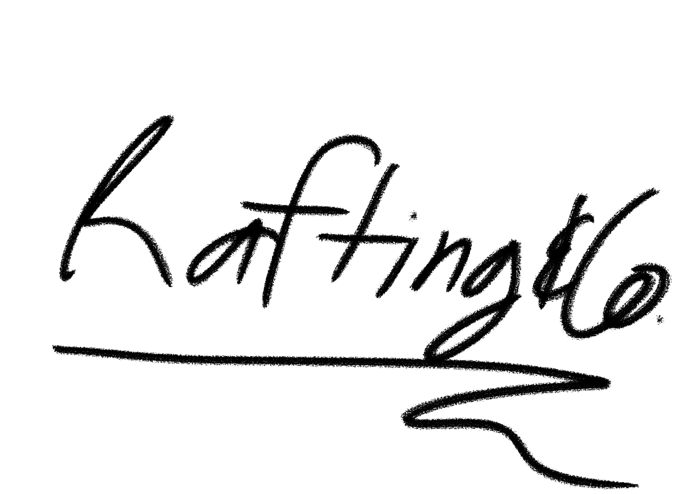
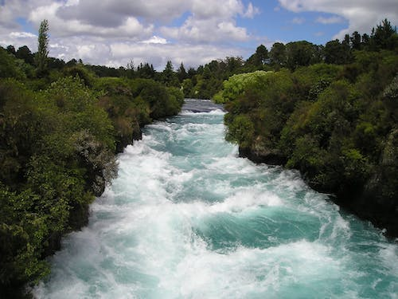
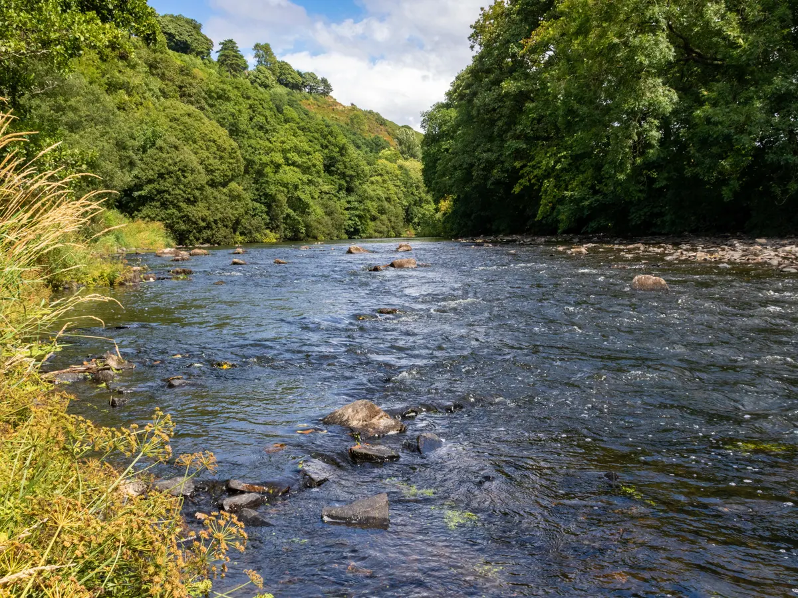
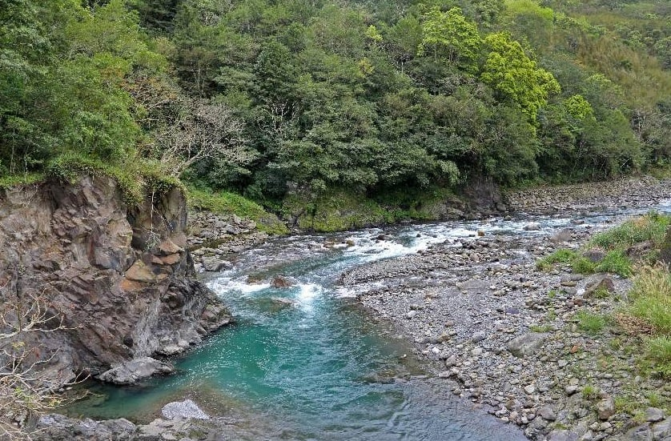
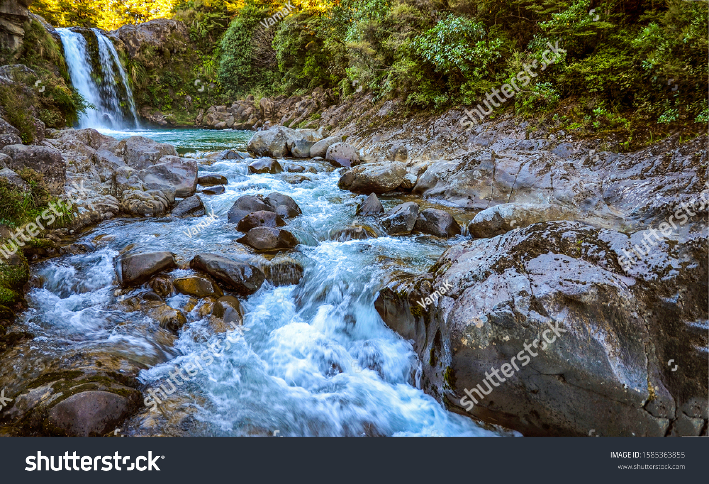

The First River

This is one of the rivers of all time, featuring watery water and trees that are tree-er than any you've seen before.
Class 4
River 2: The Second One

Yet another river, my sources tell me, this one is very fun in at least one respect. Probably.
Class 2
Riv3r

Some of the images I found as I quickly searched online looked like they were made by AI, but this one looks legit.
Class 3
River: Tokyo Drift

I don't think that a raft could actually clear these rocks, but this image would sure do a heck of a job selling people on the adventure aspect.